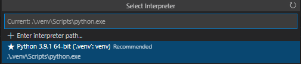
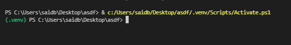
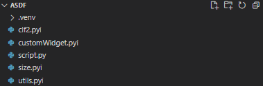
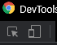
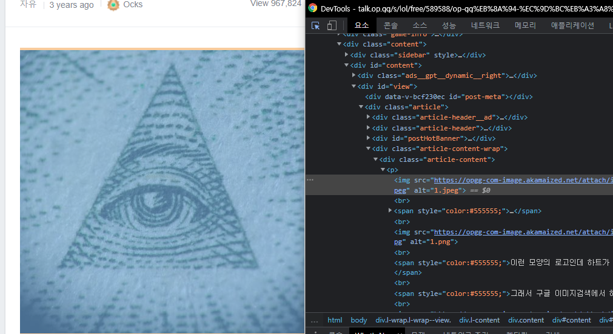
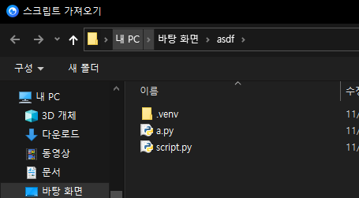
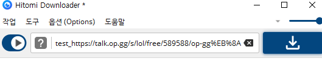
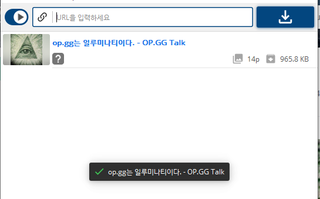

두려워져요
물론 기존에 작성되어있는 예제가 있긴하다.
근데 저것만으로는 어케 작성할지 막막하다.
이 글을 보면 어느정도는 작성이 가능할것이다.
준비물
- Python3
- bs4를 써보았다.
- requests를 써보았다.
어느정도 프로그래밍 지식을 알고있다는 가정하에 이 글을 작성할것이다.
제가 그래야 설명하기 편하거든요.
진짜 준비
https://github.com/Hitomi-Downloader-extension/Hitomi-Downloader-Stubs/releases/tag/For-Download
스텁파일을 받아두자.
KurtBestor님이 제공해주신 소스코드를 바탕으로 작성된 타입힌팅 파일이다.
모든 메소드는 아니더라도, 주로 쓰이는 메소드는 힌팅이되있다.
글쓴이의 개발환경은 이러하다.
- Windows 10
- Python 3.9.1 (venv)
- VScode
- Pylance (strict)
본인은 타입힌트를 엄격하게 적용한다.
근데 적용 안해도 문제는 없고 괜히 돌리면 머리아파지니 기본값인 basic 모드로 돌리고 힌팅만 제공받도록하자.
자 드가자~
Venv 설정을 빠르게 해주도록하자.
py -m venv .venv

vscode 콘솔 재시작.

일케 뜨면 정상.
스텁 파일들을 작업폴더에 붙여넣자.

pip install requests bs4
필요한것들을 설치해주자.
이러면 거의 준비가됬다.
사이트 뜯기
그나마 구조가 쉬운 talk.op.gg를 빠르게 뜯어볼것이다.
미안해요 옵지
링크: op.gg는 일루미나티이다.
글의 사진을 전부 가져와보자.
Ctrl + Shift + I 를 눌러 빠르게 콘솔창 진입.
첫번째꺼 누르기

이미지를 가져다대고 엘리먼트를 보면
"아 class=article-content에 내용들이있고 img엘리먼트를 뽑아내면되겠구나~"
라고 알수있다.
그러면 이 작업을 코드로 짜보도록하자.
from bs4.element import Tagimport requestsfrom bs4 import BeautifulSoup# 내용 요청r = requests.get("https://talk.op.gg/s/lol/free/589588/op-gg%EB%8A%94-%EC%9D%BC%EB%A3%A8%EB%AF%B8%EB%82%98%ED%8B%B0%EC%9D%B4%EB%8B%A4")# html로 가져오기.data = r.text# BeautifulSoup 객체로 만들어주기.bs = BeautifulSoup(data)# div의 article-content 클래스인 엘리먼트 찾기article_content = bs.find("div", class_="article-content")# 만약 Tag속성이면..# 타입을 정확하게 지정해주기 위한 방법이다.# 이것을 쓰지 않을경우 article-content의 반환은 다음과같다.# Tag | NavigableString | Noneif isinstance(article_content, Tag) :# article content에서 img엘리먼트를 전부 가져온다.image_element_list = article_content.find_all("img")# img 엘리먼트에서 src만 뺌result = [image_element["src"] for image_element in image_element_list]# 결과출력print(result)
실행 결과는 다음과같다.
['https://opgg-com-image.akamaized.net/attach/images/20190426113210.393073.jpeg', 'https://opgg-com-image.akamaized.net/attach/images/20190901154547.393073.jpg', 'https://opgg-com-image.akamaized.net/attach/images/20190901154613.393073.jpg', 'https://opgg-com-image.akamaized.net/attach/images/20190901154709.393073.jpg', 'https://opgg-com-image.akamaized.net/attach/images/20190901154754.393073.jpg', 'https://opgg-com-image.akamaized.net/attach/images/20190901154828.393073.jpg', 'https://opgg-com-image.akamaized.net/attach/images/20190901154852.393073.jpg', 'https://opgg-com-image.akamaized.net/attach/images/20190901154929.393073.jpg', 'https://opgg-com-image.akamaized.net/attach/images/20190901155001.393073.jpg', 'https://opgg-com-image.akamaized.net/attach/images/20190901155035.393073.jpg', 'https://opgg-com-image.akamaized.net/attach/images/20190421002639.393073.png', 'https://opgg-com-image.akamaized.net/attach/images/20190421002714.393073.png', 'https://opgg-com-image.akamaized.net/attach/images/20190421002818.393073.png', 'https://opgg-com-image.akamaized.net/attach/images/20190421002956.393073.png']
아주 완벽하게 뽑혔다.
그러면 스크립트를 짜보자.
import requests# stub 파일을 적용했다면 utils가 노랑색으로 뜰것이다.# 무시해도 좋다.# utils내부에 있는 Soup객체를 쓰도록하자.from utils import Downloader, Soup# 다운로더에 등록하는 클래스 메소드다.@Downloader.register# Downloader클래스를 상속받지 않을경우 문제가된다.class DownloaderTalkOPGG(Downloader):# 타입을 지정해준다.type = "talkopgg"# 인식할 url을 지정해주자.URLS = ["talk.op.gg"]# 이 메소드 없으면 스크립트 로드시 문제생김def init(self) -> None:pass# 읽기 끝def read(self) -> None:# 밑에 코드는 위에 작성했던코드를 줄인것이다.response = requests.get(self.url)soup = Soup(response.text)self.title = soup.find("title").textimage_element_list = soup.find("div", class_="article-content").findAll("img")for image_element in image_element_list:self.urls.append(image_element["src"])
끝났다.
정말 쉽지않나?
해당 옵지는 이미 히토미 다운로더에 등록되어있다.
왜냐하면 필자가 PR을 넣었기 때문....
그러므로 테스트가 힘들텐데, 어케 테스트를 할것인가?
간단하다.
class DownloaderTalkOPGG(Downloader):# 그냥 타입만 바꿔주자~type = "test"
이제 히토미 다운로더를 켜보자.
스크립트 로드는 다음과같이 할수있다.
Alt + S
script.py를 로드하자.
다음과 같이 넣어주자
test_:옵지링크:

결과는?

끝!
시간나면 js렌더링이 필요한 사이트도 한번 뜯어보도록 합시다.